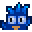

Inselhändler
| Inselhändler | |
 | |
 | |
| Öffnungszeiten: | Immer offen |
| Adresse: | Ingwerinsel |
| Bewohner: |  Inselhändler |
Der Inselhändler ist ein blauer Vogel, der im Norden der Ingwerinsel einen Laden betreibt. Wie der Wüstenhändler, akzeptiert der Inselhändler kein Gold, nur ein Tauschen von Gegenständen, die auf der Ingwerinsel gefunden werden können, ist möglich.
Er wird freigeschaltet, indem man den Papageien Papageien  10 Goldene Walnüsse gibt. Dafür muss das Insel-Farmhaus auf der Ingwerinsel bereits freigeschaltet worden sein.
10 Goldene Walnüsse gibt. Dafür muss das Insel-Farmhaus auf der Ingwerinsel bereits freigeschaltet worden sein.
Permanentes Angebot
| Bild | Name | Beschreibung | Preis |
|---|---|---|---|
| Teleport-Totem: Hof | Bringt dich direkt vor dein Haus. Wird bei Benutzung verbraucht. | ||
| Taro-Knollen | Pflanze diese bei warmem Wetter. Dauert 10 Tage bis zur Reife. Wächst schneller, wenn sie in der Nähe eines Gewässers gepflanzt wird. Mit der Sense ernten. | ||
| Ananassamen | Pflanze diese bei warmem Wetter ein. Dauert 14 Tage bis zur Reife und produziert danach weiterhin Früchte. | ||
| Goldene Kokosnuss | Das ist eine hart zu knackende Nuss.
(Verfügbar, nachdem die erste Goldene Kokosnuss geöffnet wurde) |
||
 |
Tropisches TV | Kann in deinem Haus platziert werden. | |
| Dschungel-Fackel | Kann in deinem Haus platziert werden. | ||
| Bananensprössling | Dauert 28 Tage, um einen reifen Bananenbaum zu produzieren. Trägt das ganze Jahr über Früchte, wenn es auf der Ingwerinsel gepflanzt wird. | ||
| Mangosprösslinge | Dauert 28 Tage, um einen reifen Mangobaum zu produzieren. Trägt das ganze Jahr über Früchte, wenn er auf der Ingwerinsel gepflanzt wird. | ||
 |
Wildes Doppelbett | Kann in deinem Haus platziert werden. | |
 |
Tropisches Bett | Kann in deinem Haus platziert werden. | |
| Mahagoni-Samen | Platziere dies auf deiner Farm, um einen Mahagonibaum zu pflanzen. | ||
| Luau Rock | Ein Rock, der dazu bestimmt ist, dich zum Luau der Party zu machen! | ||
| Bananenpudding Recipe | Rezept für: Banana Pudding | ||
| Deluxe Hydro-Boden Recipe | Rezept für: Deluxe Retaining Soil |
Wechselndes Angebot
| Bild | Name | Beschreibung | Preis | Verkaufstage |
|---|---|---|---|---|
| Tropischer Stuhl | Kann in deinem Haus platziert werden. | Gerade Monatstage | ||
 |
Kleine Mütze | Es ist eine aerodynamischere Art von Hut. | Montags | |
| Palmwand Ornament | Kann in deinem Haus platziert werden. | Dienstags | ||
 |
Hüttensänger Maske | Trage diese, damit du genauso aussieht wie dein Lieblings-Inselhändler. | Mittwochs | |
 |
'Vulkan' Foto | Kann in deinem Haus platziert werden. | Donnerstags | |
 |
Deluxe-Cowboyhut | Cowboyhut mit einer extremeren Form. | Freitags | |
| Ozeanischer Teppich | Kann in deinem Haus platziert werden. | Samstags | ||
 |
Tropisches Doppelbett | Kann in deinem Haus platziert werden. | Sonntags | |
| Galaxieseele | Schmiede 3 davon zu einem Galaxie-Schwert, um seine endgültige Form zu entfesseln.
(Verfügbar, nachdem min. 50 gefährliche Monster getötet wurden.[1]) |
Letzter Tag des Monats |
Referenzen
- ↑ Siehe Locations.IslandNorth::getIslandMerchantTradeStock im Spielcode.
Geschichte
- 1.5: Eingeführt.
| Gebäude | ||
|---|---|---|
| Händler | Abenteurergilde • Anglerbedarf • Bruchbude • Buchhändler • Eisstand • Geheimes Walnusszimmer von Mr. Qi • Inselhändler • Joja-Markt • Kasino • Klinik • Kneipe • Marnies Ranch • Oase • Pierres Gemischtwarenladen • Reisewagen • Schmied • Schreinerladen • Turm des Zauberers • Vulkanzwerg • Wüstenhändler | |
| Häuser | Bauernhaus • Baumhaus • Bergstraße 24 • Elliotts Hütte • Flussstraße 1 • Flussstraße 2 • Haus des Bürgermeisters • Insel-Farmhaus • Leahs Hütte • Weidengasse 1 • Weidengasse 2 • Wohnwagen • Zelt | |
| Bauernhof Gebäude | Bauernhof | Brunnen • Fischteich • Gewächshaus • Hühnerstall • Hütte • Mühle • Pferdestall • Schleim-Stall • Schuppen • Silo • Stall |
| Spezial | Erdobelisk • Goldene Uhr • Hof-Obelisk • Insel-Obelisk • Junimo-Hütte • Wasserobelisk • Wüsten Obelisk | |
| andere Gebäude | Gemeinschaftszentrum • Hexenhütte • Hundehütte • Insel-Außenstelle • Joja-Warenhaus • Kanalisation • Kino • Museum • Spa | |